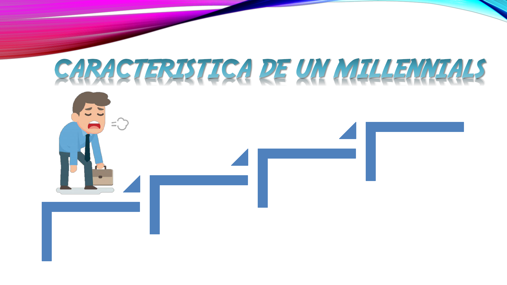
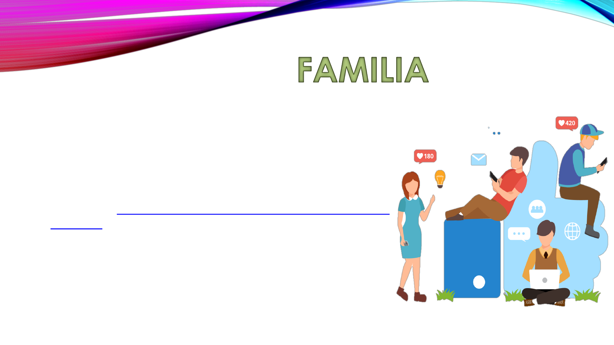
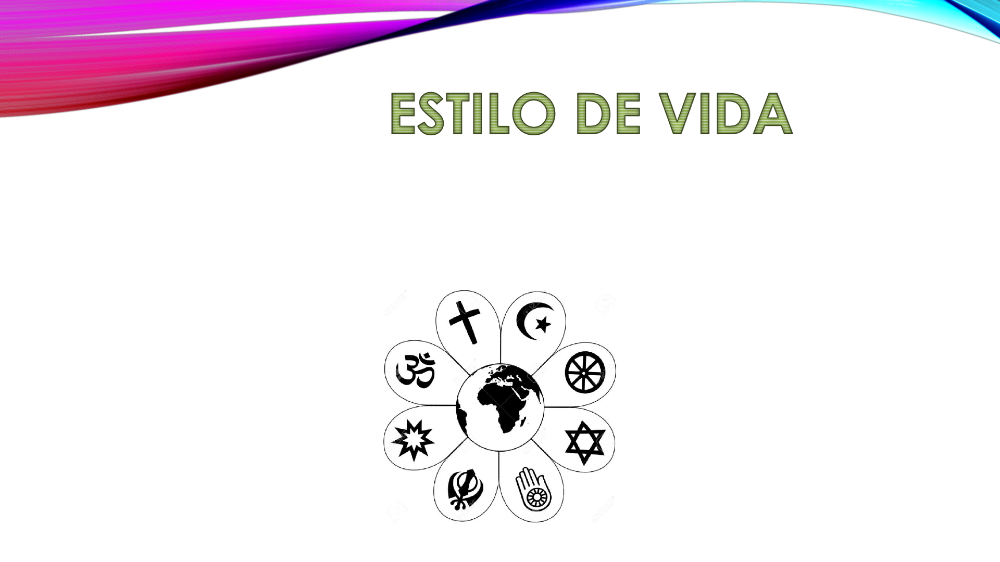
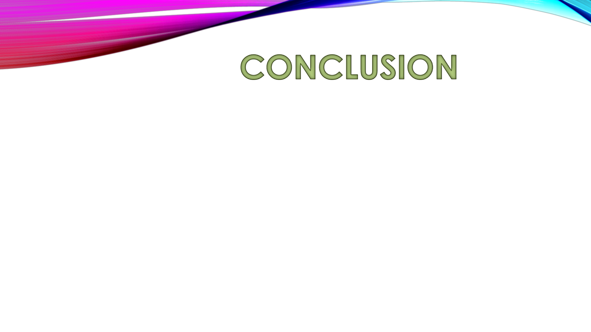

¿QUIÉNES SON LOS MILLENNIALS
• También denominados Generación Y o Generación Peter Pan, los
millennials (milenio) son las personas nacidas entre 1980 y 2000. Para
los antropólogos del parentesco esta generación es la que le sigue a
las generación X y baby boomers, aquellas que se criaron entre
conflictos bélicos e inestabilidad económica.

Trabajo
Manejo de la
comunicación
digital
Familia
Estilo de vida
• Si eres un millennial, seguro has escuchado hasta el cansancio que tu
generación se estanca porque es floja, por esperar ser
recompensada por cualquier actividad que realiza o porque desea
que su trabajo cumpla con expectativas irreales en donde se tenga
más tiempo libre que horas de trabajo.

• La principal razón por la cual los millennials están
insatisfechos con sus trabajos es porque su salario
les es insuficiente, con un 43 %. La segunda
causa, con un 35 %, es porque su lugar de trabajo
no ofrece oportunidades de crecimiento. (En
Estados Unidos, los ingresos de la generación
millennial son un 34 % menor al que se percibía en
1996; de ahí la dificultad para pagar una casa
propia). En último lugar (15 %) se encuentra el que
la cultura laboral de dicho lugar les parece
desagradable, seguido del aburrimiento y la falta
de flexibilidad.
• Es erróneo pensar que
los millennials están más en estrecho
contacto con la tecnología que las
otras generaciones. En nuestro
lenguaje cotidiano solemos asociar
este término a ordenadores y móviles;
sin embargo, la escritura, la mecánica
y la carpintería también son formas
de tecnología. Como tal, lo que
debería decirse es que este sector de
la población tiene una facilidad en el
uso de los medios, herramientas y
plataformas digitales.

• Un cambio constante con el paso de las
generaciones es la percepción sobre la
familia. Los millennials muestran una mayor
apertura hacia las familias diferentes a las
tradicionales o nucleares, las cuales se
componen de madre, padre e hijos.
Según un estudio de Pew Research
Center de 2010 el 50 % de ellos está a favor
de la legalización del matrimonio
homosexual; un 36 % está en contra y el resto
está indeciso. El porcentaje de aceptación
entre la generación X es de 43 %, mientras
que con los boomers es de 31 %.
• Algo que les llama la atención a los millennials para sus vidas, mucho más
que empezar una familia o poner un negocio propio, es invertir en
experiencias. La más popular entre ellas es viajar. Conocer el mundo,
adquirir una casa propia, conseguir un salario alto y generar cambios
positivos en la sociedad (sobre todo en cuestiones
medioambientales) son metas más deseables que tener hijos. La
edad promedio para casarse en hombres es de 30 años; en mujeres,
de 28.

• En temas religiosos, 1 de 4 millennials no profesan religión alguna. Pero
quienes sí están afiliados a un grupo religioso suelen tener creencias y
prácticas igual de tradicionales y arraigadas que sus antecesores.
• En general, esta generación no es muy optimista sobre su futuro. Y ese
pesimismo lo sienten en todos los ámbitos de sus vidas, tanto
individuales como colectivas. La investigación de 2019 de Deloitte
mostró un escenario sombrío, ya que los millennial no tienen fe en las
instituciones tradicionales y no ven el progreso social como una meta
alcanzable.
• Como ya advertimos, está claro que estas características no se
cumplen estrictamente al 100% en todos los casos. Muchos de estos
fenómenos también están ligados a pautas culturales que dependen
del contexto social donde uno se desarrolla. No obstante, diversos
estudios muestran diversas tendencias que definen a grandes rasgos
a la generación millennial.

• También es errado concebir a la generación millennial como una
suerte de "decadencia". Estos cambios que irrumpen con los modelos
tradicionales de familia y trabajo no hacen otra cosa que fomentar
otros ideales de vida que en décadas anteriores parecían
impensables. Recordemos que este fenómeno siempre ha sucedido
con los cambios generacionales, y las variaciones en los estilos de
vida y valores no suelen ser aceptados con facilidad por quienes
llevaron una vida completa con una ideología distinta. En este
sentido, se necesitaría de una mayor empatía para comprender los
desafíos de las personas más jóvenes.